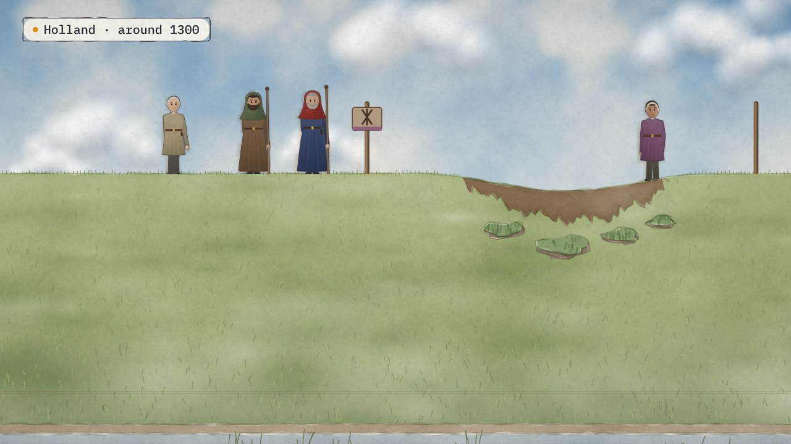
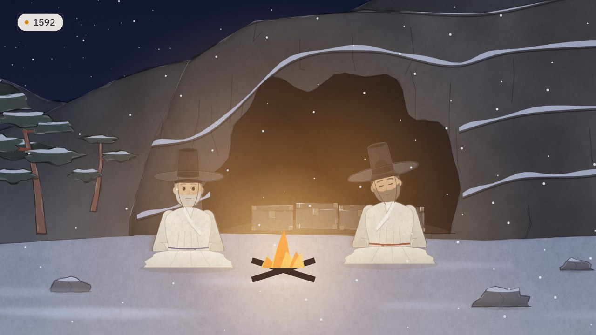

← Previous · Film 1 of 3
A capability, not a project
A project ends, and the deputy vice-chancellor asks what governance does. Draw it as a capability, with services and promises.
Topics › Data governance › Governance on the map
Three faculties count a completion three ways, so Health looks nine points behind. Clara, in Planning, asks for the term to be defined, and Noor and Yusuf follow her request: each step done by a role, each role filled by a person or an agent, and the glossary run as a product.
Builds on A capability, not a project
Press Play, or pick a chapter. Turn on Pause and think to stop for one question at the end of chapters.
Download the videoCaption filesRead the script
Where next?
The three Pause and think questions, for a class or a team. Open one to see the answer.
Film 2 of 3.

← Previous · Film 1 of 3
A project ends, and the deputy vice-chancellor asks what governance does. Draw it as a capability, with services and promises.

Next · Film 3 of 3 →
A request waits nine days with the wrong person. Give every piece one home, and sync every copy one way.